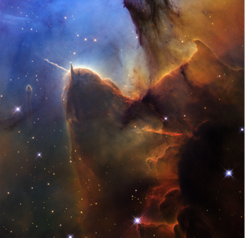

Zvezde so ogromne krogle vročega plina, predvsem vodika in helija, ki oddajajo svetlobo in toploto zaradi jedrskih reakcij v svojem središču. So osnovni gradniki galaksij in imajo ključno vlogo pri nastanku novih elementov ter planetarnih sistemov.

Zvezde nastajajo v velikih oblakih plina in prahu, ki jih imenujemo meglice. Zaradi gravitacije se deli teh oblakov začnejo krčiti in segrevati. Ko temperatura v središču doseže več milijonov stopinj Celzija, se začne jedrska fuzija. Pri tem se vodik pretvarja v helij, pri čemer se sproščajo ogromne količine energije. Takrat se rodi nova zvezda.
Življenjska doba zvezde je odvisna predvsem od njene mase. Manjše zvezde porabljajo gorivo počasneje in lahko živijo več milijard let. Večje zvezde pa gorivo porabljajo hitreje in imajo krajšo življenjsko dobo.
Ko zvezdi začne primanjkovati vodika, se njena zgradba spremeni. Manjše zvezde se razvijejo v rdeče velikanke in nato odvržejo zunanje plasti, za njimi pa ostane belo pritlikavo jedro. Zelo masivne zvezde lahko ob koncu življenja eksplodirajo kot supernove. Po takšni eksploziji lahko nastane nevtronska zvezda ali če je je predhodna rdeča velikanka res velika nastane črna luknja.
Zvezde so pomembne, saj v svojih jedrih ustvarjajo težje kemijske elemente, kot so ogljik, kisik, silicij in železo. Ti elementi se po smrti zvezd razpršijo v vesolje in postanejo gradniki novih zvezd, planetov ter tudi živih bitij. Brez zvezd ne bi bilo pogojev za nastanek življenja, kakršnega poznamo danes.